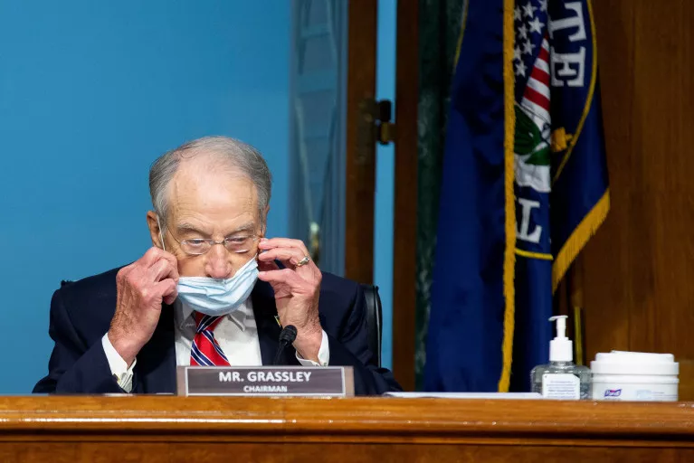

TOP STORY
BLM Co-Founder: Law Enforcement As We Know It Must Be Abolished
"Enough is enough. It's time we defund law enforcement," Patrisse Cullors said.
FEATURED STORIES
Friday's Positive Jobs Report Could Be Bad News for the Next Stimulus Package
Republicans, already hesitant to dole out more federal relief as the country reopens, view the encouraging numbers as justification to delay—or forgo altogether—additional spending.
Former George W. Bush Staffers Form PAC to Back Joe Biden
Former officials of the George W. Bush administration have formed a super PAC called 43 Alumni for Biden in a stinging rebuke of President Donald Trump.
Coronavirus Cases Are Rising in More Than Half of All U.S. States
At least 27 states across the country have reported an increase in novel coronavirus cases over the past few weeks
U.S. Unemployment Rate Falls Despite Pandemic—But Not for Blacks and Asians
The U.S. Bureau of Labor Statistics has released updated figures, showing overall unemployment at 13.3 percent.
Russia Sends More Troops West, Challenging U.S.-NATO Presence Near Borders
Russia is sending more troops to the Western Military District, which borders NATO states and Ukraine, as it argues that the United States is stepping up military activities with allies.
THE DEBATE
Governors Can't Pick and Choose Constitutional Rights
BY EUGENE KONTOROVICH
Pandemic Constitutional Rights: Not an All-Or-Nothing Proposition
BY MICHELE GOODWIN
OPINION
Justice for George Floyd Is a Must. But to End the Cycle, We Need Dialogue
BY JOAN COOK

Condemn the Selective Outrage of Virtue-Signaling Progressives
BY JASON RANTZ
From 1966 to 2020
BY MARK WHITAKER
America Needs a Leader Who Will Confront China's Loan Sharking in Africa
BY JACO BOOYENS

Domestic Military Use Is Lawful but Not Yet Prudent
BY JOHN YOO AND ROBERT DELAHUNTY

I'm a Kansas Lawmaker and Doctor. Wearing a Mask Isn't About Politics
BY BARBARA BOLLIER
MORE STORIES
280 Ex-Military Officials, Diplomats to Trump: Don't Use Troops in Protests
More than 200 national security officials penned a letter calling on President Donald Trump and other officials to reconsider sending in troops to quell nationwide protests.
Entire Buffalo Police Unit Resigns Following Suspension Of 2 Officers
All 57 officers were members of the Buffalo Police Department Emergency Response Team
Leaked Document: SWAT Teams, Sniper-trained Units Sent to D.C. Amid Protest
Elite SWAT teams and sniper-trained units were among at least a dozen federal agencies set to D.C. amid protests over the past week, according to a Homeland Security document.

Officials Fight for Control As Washington DC Braces for Weekend of Protests
The command structure may make no sense, but it's aimed at satisfying the demands of the Trump White House, a senior military official says.
U.K. Health Secretary Advises People to Avoid Protests Over COVID-19 Fears
"Please, for the safety of your loved ones, do not attend large gatherings, including demonstrations," U.K. Health Secretary Matt Hancock said.
Minneapolis Bans All Chokeholds By Police
The new requirements are part of a stipulation between the city and the Minnesota Department of Human Rights, which launched a civil rights investigation in response to the death of George Floyd.
Brexit Talks Between E.U. and U.K. Deadlocked Again
The E.U.'s chief negotiator accused the U.K. of backtracking on commitments as another round of talks concluded on a post-Brexit trade deal.
Washington D.C. Unveils 'Black Lives Matter' Mural Near White House
Murel Bowser, the Mayor of Washington D.C., unveiled the Black Lives Matter Plaza in front of St. John's Episcopal Church in honor of George Floyd protestors who were tear gassed Monday.
From U.S. to Japan, Lawmakers Unite to End 'Naive' China Strategy
The Inter-Parliamentary Alliance on China is pushing for a more realistic approach to China that will address its human rights abuses, trade malpractice and accepted diplomatic norms.

Dwayne Johnson For President? 'The Rock' is Third-Most Backed Candidate
A flurry of bets have been placed on the Hollywood star to triumph in the 2020 election after his "Where are You?" speech calling out President Trump.
'Black Owned Business' Bar Owner Hopeful For Future of Minneapolis
Tony Zaccardi gained national attention after painting "Black Owned Business" on his bar last week.
HEROES OF THE PANDEMIC

The Doctors and Nurses Crossing the Border Daily to Help Asylum Seekers

The Charity Helping Vulnerable Holocaust Survivors During the Pandemic
Women Launch Campaign Urging People to Donate Their Stimulus Checks
CULTURE & TRAVEL
Black Lives Matter Protests Around the World, in Photos
Artists on the Internet are Honoring George Floyd With Striking Portraits
Movies by Black Filmmakers Now Streaming Free on Criterion Channel
START YOUR DAY WITH OUR TOP 5 ARTICLES
IN THE MAGAZINE
SEE ALL FEATURES >
POLITICS
Biden, the Moderate, Plans the Most Radical Economic Overhaul Since FDR
HEALTH
Mental Health Toll of Coronavirus Could Rival that of the Disease Itself
HEALTH
Contact Tracing Won't Solve the Coronavirus Crisis: Epidemiologist
CULTURE
Comedian Goes Viral Miming Trump
CULTURE
Miss Manners' Etiquette Lessons for Contagious Times
CULTURE
Lisa Kudrow on Netflix's 'Space Force' and the 'Friends' Reunion Special
CULTURE
GROUND ZERO
EDITOR'S PICK
Protesters Gather in D.C. as Mayor Calls for 'More Justice'
Saturday's demonstrations in the nation's capital were expected to be the city's largest since George Floyd's death while in police custody on May 25.
Pompeo Says China Exploiting George Floyd Death: 'Laughable Propaganda'
He offered a scathing rebuke Saturday of Chinese government officials and their country's state-run media outlets for producing "obscene propaganda" that looks to capitalize on U.S. civil unrest.
Unemployment Rate Would Have Risen in May If Furloughed Were Included
Approximately 4.9 million furloughed workers were misclassified as employed, according to the Bureau of Labor Statistics.
$1.5 Million Raised for Minneapolis Businesses Impacted by Protests
Fundraiser organizers said they hope to raise $5 million for north Minneapolis businesses damaged during the George Floyd protests.
2 Buffalo Police Officers Charged With Assault of Protester
The officers have been charged with second-degree assault after a 75-year-old protester was shoved to the ground Thursday in Buffalo, New York, Erie County District Attorney John Flynn announced Saturday.
Atlanta Mayor Says 'Keep Loving Each Other' to Children Tackling Racism
The mayor also said that she hopes that one day the words of Martin Luther King will come true, so that people will be judged by the content of their character and not their skin color.
U.S. Embassy in Mexico City Locked Down Due to George Floyd Protests
Amid Friday protests over a Mexican man killed in police custody, vandals allegedly threw Molotov cocktails and rocks at the embassy.
Minnesota Orchestra Is the Latest Organization to Cut Ties With Police
AThe Minnesota Orchestra stated that it will also combat "white privilege" in its own organization to advance change.